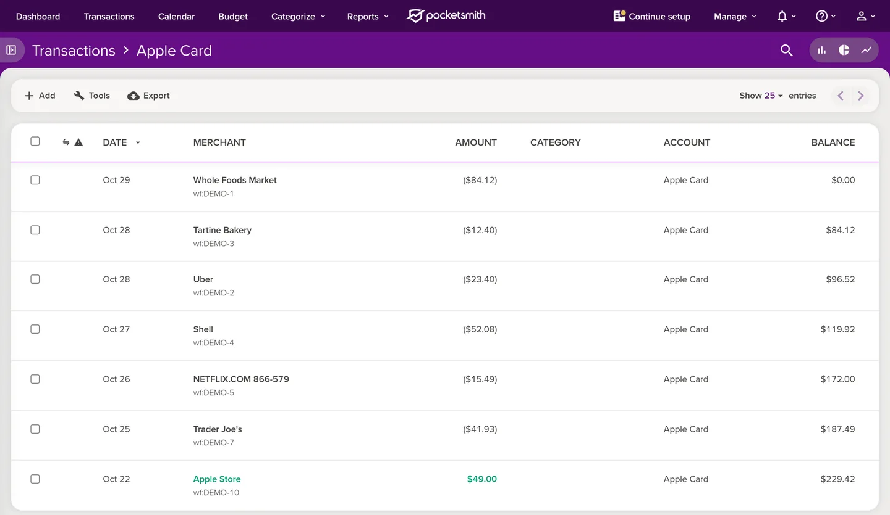

Send Apple Card transactions to PocketSmith
WalletFeed sends your Apple Card, Apple Cash and Savings transactions from your iPhone to PocketSmith. You make a developer key in PocketSmith, then you paste the key in WalletFeed.
Before you start
You must have these items:
- An iPhone with iOS 26 or a newer version. WalletFeed is available only in the US.
- WalletFeed on your iPhone, with access to your Apple Card, Apple Cash or Savings account.
- WalletFeed Pro (a subscription with a 1-week free trial, or a one-time Lifetime purchase). You must have WalletFeed Pro to send transactions to PocketSmith.
- A PocketSmith account and its password. You can use the Free plan of PocketSmith. The Free plan lets you have 2 accounts in PocketSmith.
Your key stays on your iPhone
- WalletFeed keeps the developer key in the Keychain on your iPhone. iOS encrypts the Keychain.
- The developer key does not go to iCloud Keychain or to your other devices.
- WalletFeed has no account and no servers. No person at WalletFeed can see or get the developer key.
- Your iPhone sends the developer key only to PocketSmith, in each request to PocketSmith.
- When you delete the destination, WalletFeed deletes the developer key from your iPhone. You can also delete the key in PocketSmith.
Step 1: Open the PocketSmith form in WalletFeed
-
On your iPhone, open WalletFeed.
-
Tap Destinations.
-
Tap + at the top of the screen.

-
In the search field, type
PocketSmith. -
Tap PocketSmith.

-
If WalletFeed shows WalletFeed Pro, get WalletFeed Pro.
Result: After you get WalletFeed Pro, WalletFeed shows the PocketSmith form.
Step 2: Make a developer key in PocketSmith
PocketSmith shows a warning on its developer keys page. The warning tells you that a developer key gives access to all of your PocketSmith data until you delete the key. PocketSmith also tells you not to paste a key into "a third-party website or hosted service". If you are not a software developer, PocketSmith does not recommend developer keys.
For information about the key in WalletFeed, refer to Your key stays on your iPhone.
- With the key, WalletFeed gets the list of your PocketSmith accounts and can make an Apple Card account. WalletFeed also adds, changes and deletes the transactions that it sends.
- You can delete the key in PocketSmith (refer to Delete the key in PocketSmith). After you delete the key, WalletFeed cannot connect to PocketSmith with it.
To make the key on your iPhone, do these steps:
-
In the PocketSmith form, tap Manage Developer Keys.

Result: Your web browser opens PocketSmith.
-
If PocketSmith shows Sign in to PocketSmith, get access to your PocketSmith account with your e-mail address and your password.
-
In Confirm your password, type your PocketSmith password.
Each time that you open Manage developer keys, PocketSmith shows this box.

-
Tap CONFIRM PASSWORD.
Result: PocketSmith shows Manage developer keys and the warning. If the password is incorrect, PocketSmith shows "Sorry, your password was incorrect. Try again."
-
In Create a new key, type
WalletFeedin Name.The name helps you find the WalletFeed key in the list of keys.

-
Tap CREATE KEY.
Result: PocketSmith shows the key in a box below a green message. PocketSmith shows the key only one time.
-
If the screen does not show the key, scroll to the green message above the Create a new key form.
On an iPhone, the page can stay at the Create a new key form after you tap CREATE KEY.

-
Touch and hold the key.
-
Make sure that the highlighted text includes all of the key.
The key has 128 letters and numbers. PocketSmith has no button to copy the key.
-
If the highlighted text does not include all of the key, drag the ends of the highlighted text.
-
Tap Copy.
Step 3: Paste the key in WalletFeed
-
Open WalletFeed again.
-
If WalletFeed does not show the PocketSmith form, do Step 1 again.
-
Touch and hold Developer Key.
-
Tap Paste.
Result: WalletFeed connects to PocketSmith with the key. Then WalletFeed shows Account.
-
In Account, select the account that receives your transactions.
If PocketSmith has an account with the name Apple Card, WalletFeed selects that account. If PocketSmith has no account with that name, WalletFeed selects New Apple Card Account. With New Apple Card Account, WalletFeed makes a credit card account with the name Apple Card in PocketSmith.
On the Free plan, PocketSmith does not let WalletFeed make a third account. If you have 2 accounts, select one of them.
-
Tap Add.
Result: WalletFeed shows Send Transactions to PocketSmith? The message tells you the data that PocketSmith receives, the Wallet accounts and the start date. If you tap Cancel, WalletFeed does not add the destination.
-
Tap Send.
Result: WalletFeed starts to send your transactions to PocketSmith. In Destinations, the name of the new destination starts with "PocketSmith ·", for example "PocketSmith · Apple Card".
Step 4: Find the transactions in PocketSmith
-
On a computer, open PocketSmith in a web browser.
-
If PocketSmith shows "What's your main motivation for wanting to manage your money?", click Skip.
-
Click Transactions at the top of the page.
-
Click the panel icon to the left of the Transactions title.
Result: PocketSmith shows Accounts.
-
In Accounts, click Apple Card or the account that you selected in WalletFeed.
Result: The title changes to Transactions › Apple Card. Below each merchant, PocketSmith shows
wf:and an ID.
-
Click a transaction.
-
Click Memo.
Result: PocketSmith shows the card statement text.

Data that PocketSmith receives
WalletFeed adds each transaction to the PocketSmith account that you selected. This account also receives the transactions from your other Wallet accounts, for example Apple Cash. To select the Wallet accounts, refer to Send only some transactions.
| From Wallet | In PocketSmith |
|---|---|
| The merchant name, or the description if there is no merchant name | MERCHANT |
| The amount, negative for a purchase and positive for a refund | AMOUNT |
| The date of the transaction, in the time zone of your iPhone | DATE |
| The card statement text, if it is different from the merchant name | Memo |
wf: and the ID of the transaction in Wallet |
The note below the merchant |
PocketSmith shows a purchase in parentheses, for example ($84.12). It shows a refund in green, for example $49.00.
PocketSmith receives no category and no balance. You can give each transaction a category in PocketSmith. After WalletFeed sends a transaction, WalletFeed changes only its amount and its date. Your changes to the merchant, the category and the labels stay.
The new Apple Card account starts with a balance of $0.00. PocketSmith calculates the BALANCE column from that balance. Thus, the BALANCE column can be different from the balance of your card.
New and changed transactions
While WalletFeed is open, PocketSmith receives changes in seconds. When WalletFeed is not open, iOS starts WalletFeed approximately 1 hour or less after a change in Wallet. If Background Sync is on in Settings › Sync, WalletFeed then sends the change.
PocketSmith also receives pending charges. When a pending charge becomes posted, WalletFeed changes the amount and the date of the same transaction in PocketSmith. PocketSmith does not show a pending status for transactions from WalletFeed. To send only posted charges, you can set Filter to on and Include Pending to off (refer to Send only some transactions).
WalletFeed deletes a declined charge from PocketSmith. WalletFeed also deletes a transaction that Wallet removes. PocketSmith receives a refund as a different transaction with a positive amount.
Send previous transactions
A new destination also receives previous transactions from the start date in Settings › Sync › Initial History. Initial History is All until you change it. If you change Initial History before you add PocketSmith, the new destination receives transactions from the new start date.
To send previous transactions after you add PocketSmith, do these steps:
-
In Destinations, tap the PocketSmith destination.
-
Tap Send History.
-
Tap 30 Days, 90 Days, 1 Year or All.
Result: WalletFeed shows Sending History and the number of transactions that it sent.
-
To stop WalletFeed before it sends all of the transactions, tap Send History › Stop Sending.
WalletFeed sends a small number of previous transactions to PocketSmith, waits, and then sends more transactions. If you have many transactions, WalletFeed can be slow to send all of them.
Send History does not add a transaction two times. WalletFeed finds each transaction by its wf: note. If the amount or the date is different, WalletFeed changes the transaction that it finds. If you deleted a transaction in PocketSmith, Send History adds the transaction again.
For more information, refer to Send previous transactions.
Change or remove the destination
You change the PocketSmith destination on its screen in Destinations. For more information about this screen, refer to Destinations.
Send only some transactions
-
In Destinations, tap the PocketSmith destination.
-
Set Filter to on.
-
Change Include, Minimum, Include Pending, Accounts, Categories or Exclude.
In Accounts, you select the Wallet accounts for PocketSmith. With Apple Intelligence, you can also type a rule in words, for example "Travel over $50, not Uber", and tap the Apple Intelligence icon.
For more information, refer to Filter the transactions for a destination.
Stop the destination for a time
-
In Destinations, tap the PocketSmith destination.
-
Set Enabled to off.
Until you set Enabled to on again, WalletFeed does not send transactions to PocketSmith.
Replace the key
If you deleted the key in PocketSmith, or if PocketSmith does not accept the key, do these steps:
-
Make a new key in PocketSmith (refer to Step 2).
-
Open WalletFeed again.
-
In Destinations, tap the PocketSmith destination.
-
Tap Replace Key.
-
Touch and hold Developer Key.
-
Tap Paste.
-
Tap Replace.
Result: Before WalletFeed puts the new key in the Keychain, WalletFeed connects to PocketSmith with the key. Then Replace Key shows a green checkmark.
Remove PocketSmith from WalletFeed
-
In Destinations, tap the PocketSmith destination.
-
Tap Delete.
-
Tap Delete again.
Result: WalletFeed removes the destination and deletes the key from your iPhone. The transactions that WalletFeed sent stay in PocketSmith. Until you delete the key in PocketSmith, PocketSmith accepts the key.
Delete the key in PocketSmith
-
On a computer, open Manage developer keys in PocketSmith.
-
If PocketSmith shows Sign in to PocketSmith, get access to your PocketSmith account with your e-mail address and your password.
-
In Confirm your password, type your PocketSmith password.
-
Click CONFIRM PASSWORD.
-
In the row for WalletFeed, click Revoke.
Result: PocketSmith does not show a message before it deletes the key. After PocketSmith deletes the key, it shows "Successfully deleted your WalletFeed key."

After you delete the key, the PocketSmith destination in WalletFeed shows "Authentication failed" when WalletFeed tries to send transactions. To send transactions again, you must make a new key and replace the key in WalletFeed.
If there is a problem
To make sure that WalletFeed can send transactions to PocketSmith, do these steps:
-
In Destinations, tap the PocketSmith destination.
-
Tap Send Test.
Result: If PocketSmith receives the test transaction, WalletFeed shows a green checkmark.
If WalletFeed shows "Key rejected (HTTP 401)"
PocketSmith does not accept the key, for example because you copied only a part of the key. WalletFeed then shows "Key rejected (HTTP 401). Create a new one in PocketSmith."
-
Make a new key in PocketSmith (refer to Step 2).
Before you tap Copy, make sure that the highlighted text includes all of the key.
-
Open WalletFeed again.
-
Touch and hold Developer Key.
-
Tap Paste.
If WalletFeed shows "Key rejected (HTTP 403)" after you tap Add
On the Free plan, PocketSmith lets you have 2 accounts. If you have 2 accounts, WalletFeed cannot make the Apple Card account. WalletFeed then shows "Key rejected (HTTP 403). Create a new one in PocketSmith." The key is correct, and a new key does not help.
- In Account, select one of your PocketSmith accounts.
- Tap Add.
If the destination shows "Authentication failed"
PocketSmith does not accept the key of the destination, for example because a person deleted the key in PocketSmith.
- Make a new key in PocketSmith (refer to Step 2).
- Replace the key in WalletFeed (refer to Replace the key).
If you did not copy the key
PocketSmith shows a key only one time.
- In PocketSmith, open Manage developer keys again (refer to Step 2).
- In the row for WalletFeed, tap Revoke.
- Make a new key (refer to Step 2).
If PocketSmith shows only the Welcome page
In a new PocketSmith account, PocketSmith shows the Welcome page until you complete a start path on that page.
- On the Welcome page, click a start path, for example Take guided mode.
- Complete all the steps of that path.
You can make the developer key before you complete a start path. Guided mode also makes an account with the name Main account. WalletFeed shows this account in Account.
If PocketSmith shows a transaction two times
WalletFeed did not find the first transaction, because its wf: note changed.
- In PocketSmith, find the transaction that has no
wf:note. - Delete that transaction in PocketSmith.
If PocketSmith receives transactions only while WalletFeed is open
When Background Sync is off, WalletFeed sends transactions only while it is open.
- Tap the gear icon at the top of Destinations.
- In Settings › Sync, set Background Sync to on.
For more information, refer to Background Sync.
If the destination shows "Rejected (HTTP 404)"
A person deleted the PocketSmith account that the destination uses. If you tap Replace Key, WalletFeed shows "The account is gone from PocketSmith. Add this destination again."
- Remove the destination (refer to Remove PocketSmith from WalletFeed).
- Add PocketSmith again (refer to Step 1).
Related
Updated October 30, 2026